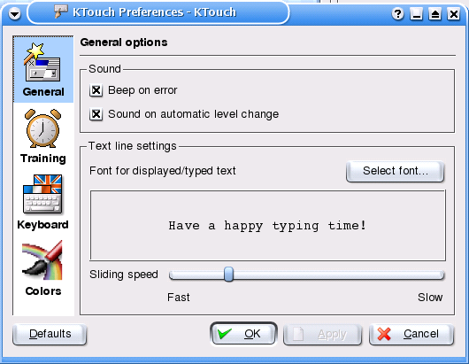
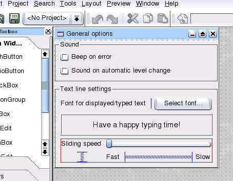
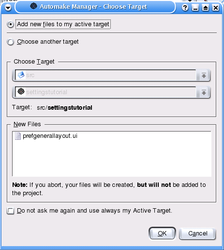
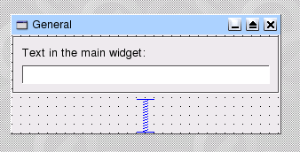
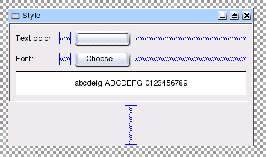
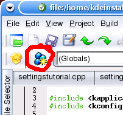
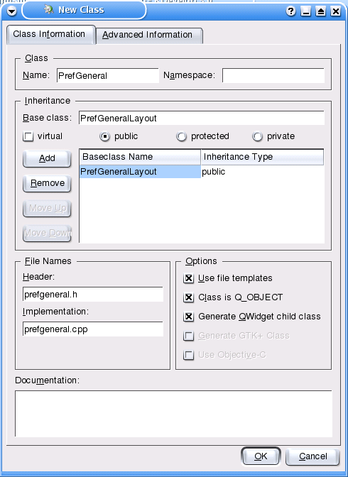
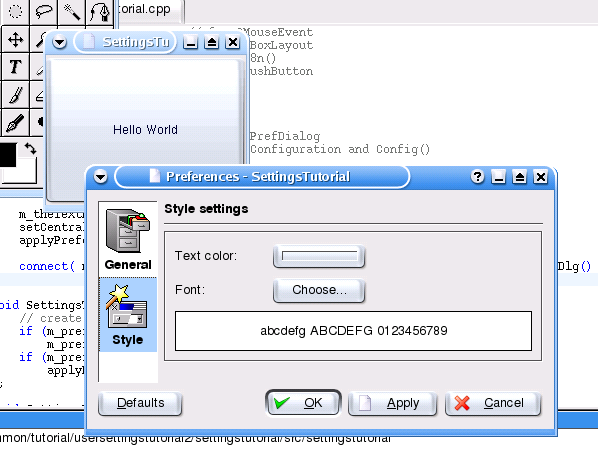

In most KDE applications user defined settings can be made and stored. This usually requires:
This tutorial will explain one possible way of achieving these objectives easily and using IMHO a good programming style. It will explain how to create a configuration object (a singleton class), how to read and write user defined configuration settings and explain how to design and program a typical KDE preferences dialog.
This tutorial is written for users of KDevelop3 (Gideon). However, if you like to develop KDE programs without using an IDE or if you use a different one, this tutorial will still be very interesting for you. Whenever you see such a blue text box the alternative procedure to using KDevelop is explained.
If you are totally new to KDE programming, take a look at the tutorials available on http://developer.kde.org and http://www.kdevelop.org. However, this tutorial will explain a great deal about how to use QT Designer and KDevelop together so maybe after reading the tutorial you will already know a bit about KDE development.
Part I: Getting started
In this part the generation of the project will be explained. Some general note about the files involved will be made and the automatically generated moc-files will be discussed.
Part II: The boring theory
Here the main configuration object will be created and the singleton concept will be explained. We will discuss the advantages of having a central and global configuration object and create the skeleton of this class.
Part III: Reading and writing the settings
We introduce some public properties to the configuration object. There will be some notes about source code documentation and I will explain how to access and use the KDE configuration files.
Part IV: Designing configuration pages
Finally we start designing our configuration pages. So this chapter is all about designing widgets with QT Designer and how to derive classes from the layouts.
Part V: Basic implementation of the settings dialog
Now it's time to implement the basic dialog code and to add the configuration pages. Still we won't see anything but you learn the essentials for creating a preferences dialog.
Part VI: Creating and executing the dialog
It's time to finally show the dialog. We will change our main widget from a label to a button and create our dialog as soon as the users presses this button. So in this part the signal/slot concept of the QT library will be explained. Moreover we will discuss the advantages of "creating dialogs on demand".
Part VII: Connecting dialog and configuration object
In this part we will connect the configuration data to the dialog. That means we are going to implement functions that transfer the data to and from the dialog. We connect some more signals and slots and finally this part explains, how to execute a default font chooser dialog.
Part VIII: Implementation of the "Default" and the "Apply" button feature
Now this final part add the functionality of the "Default" and the "Apply" button. We will modify the configuration object to have a central place for default settings. And we will improve our dialog to enable and disable the "Apply" button (just as we are expecting it).
First we create a new KDE project with KDevelop: choose a "Simple KDE Application" and fill in the required fields (I suggest the name "SettingsTutorial" since I used it in my example files). After the wizard has completed its work start the compilation and see if the program starts as expected. You should see a very simple KDE "Hello World" program.
If you create the more complex "KDE Application Framework" you will save some work, but this tutorial will go the long way...
No KDevelop: Because creating everything from scratch might be a bit time consuming I would recommend that you take the source tarball at the end of Part II and start with that.
The wizard generated 3 code files:
| main.cpp | main program, basically creates the application object and runs it | |
| settingstutorial.h | declaration of the application main window | |
| settingstutorial.cpp | definition of the main window |
Ignore main.cpp for now (in this tutorial it is not important) and let's have a look at the other two files:
#ifndef _SETTINGSTUTORIAL_H_ #define _SETTINGSTUTORIAL_H_ #ifdef HAVE_CONFIG_H #include <config.h> #endif #include <kmainwindow.h> class SettingsTutorial : public KMainWindow { Q_OBJECT public: SettingsTutorial(); virtual ~SettingsTutorial(); }; #endif // _SETTINGSTUTORIAL_H_
#include "settingstutorial.h" #include "settingstutorial.moc" #include <qlabel.h> #include <kmainwindow.h> #include <klocale.h> SettingsTutorial::SettingsTutorial() : KMainWindow( 0, "SettingsTutorial" ) { setXMLFile("settingstutorialui.rc"); new QLabel( "Hello World", this, "hello label" ); } SettingsTutorial::~SettingsTutorial() { }
I have removed the default comments, but apart from that it should look similar to the one you (hopefully) created.
Our preferences dialog main window is derived from the class KMainWindow which supplies us with a number of interesting top widget features (see KDE lib reference).
The two lines in the constructor of the PrefDialog class do nothing special: The first 'setXMLFile()' can be deleted, since we haven't a rc-file for user interface generation (this will be explained in a different tutorial). And the second one simply creates the QLabel which shows the "Hello World" text (refer to the QLabel class reference for the constructor arguments).
A short note about the line with the moc-file. MOC-files are automatically generated files that contain all the functions and declarations necessary for the compilation of the QObject macros. So whenever you create a class that is derived from QObject (or any child of it) remember that a moc-file will created and the code need to be compiled! Now as I said the moc-file contains additional declarations and definitions of code. So including it in the cpp-file simply means, that the moc-file code will be compiled together with the widgets source code (which is all very fine). If you don't include the moc-file than kdevelop (or rather the underlying autoconf/automake scripts) will generate and compile a .moc.cpp file for you. Compilewise this will usually take longer. So I'd recommand including the moc-file right after the header file.
Well, this was already the first part. We now have a framework to play around with.
One of our main objectives was to access the user defined settings easily. So we could put all the settings in one class and access the members of that class from all widgets and objects in the program. Imagine we create a class like this and call it Configuration. Now there should be just one and only one configuration object in the program and it must be available during the whole lifetime of the program (from the very first object that is created to the very last object that is destructed). Why do we need that? When initialising the application we will probably create a lot of objects, some already depending on the user settings! So we need to ensure that there is always and only one instance of the configuration object available.
How can we do this? We simply create a singleton class (you can read more about that in one of the "Effective C++" books from Scott Meyers). This is a simple as that: We just don't allow the user to create instances of the class from scratch or to create copies! And we do this by making the default constructor and copy constructor private.
But - you will ask - how can we then create an instance of the Configuration class at all? A global variable is a bad choice because the C++ standard doesn't require a certain order in the initialisation of global variables. So you might end up using the configuration object BEFORE it was actually constructed. However, the C++ standard requires that static variables in functions have to be created upon first call of the function. So we only need to create a function that returns a reference to a static configuration object inside the function and we can be assured that the object will exist whenever we want to access it.
This all boils down to the following few lines:
#ifndef CONFIGURATION_H #define CONFIGURATION_H class Configuration { public: // add some public members (the user settings) private: Configuration(); Configuration(const Configuration&); // allow this function to create one instance friend Configuration& Config(); }; // use this function to access the settings Configuration& Config(); #endif // CONFIGURATION_H
#include "configuration.h" Configuration::Configuration() { // TODO: Initialisation of user settings }; Configuration& Config() { static Configuration conf; return conf; };
Whenever the global function Config() is first called the configuration object will be created and a reference to that object will be returned. From now on you can simply use your configuration settings in any part of the program, just include the configuration header and retrieve a reference to this object via Config(). If you have a member variable m_myButtonText in the configuration class you could for instance access it using Config().m_myButtonText=....
Before this tutorial part is finished a short remark on adding new classes to a KDevelop project. There are a couple of different ways how to add a new class (consisting of its header and source file). The first is using the "new class" wizard, which is both fast and safe (and self-explainatory). The alternative is to create both files (<newclass>.h and <newclass>.cpp) on your own and use the automake manager to add the files to the project: Open the automake manager, select the current project (lower window, "settingstutorial (program in bin)" and choose "add existing files" in the context menu).
If you're not using KDevelop you will have to create the header and source file yourself (which should be quite simple) and then you need to modify the makefile.am file in the src subdirectory. Simply add the cpp-source file configuration.cpp to the line with the source files. This line should now look like:
settingstutorial_SOURCES = main.cpp settingstutorial.cpp configuration.cpp
In case you want to save yourself the work (although I recommend creating the project and its files yourself to learn it) you can download the current project: settingstutorial-01.tar.gz. Note that after opening the project in KDevelop you need to run "automake & friends" first, "configure" afterwards and finally you can compile the project.
If you don't use KDevelop just enter the following lines:
make -f Makefile.cvs
./configure
make
AT THIS POINT WE HAVE FULFILLED OUR OBJECTIVE #1!
As you will probably know already most KDE programs allow user specific settings. These settings are stored in the applications configuration files which you will most likely find in ~/.kde/share/config/<application-rc-file>.
The KDE library already provides all the necessary functions to read an write your settings to the application config file. To illustrate that we will just create some simple properties in the configuration object, namely m_font, m_text and m_textColor. Note that I'm using the typical naming convention for member variables which can be summarised in the following rules:
Now as I said, we will add some public properties in the configuration object (you can also make them private and provide access functions, but for simplicity I will just use public member variables here). And we will need two functions for reading and writing the configuration settings. The class declaration of our Configuration class becomes:
#ifndef CONFIGURATION_H #define CONFIGURATION_H #include <qstring.h> #include <qfont.h> #include <qcolor.h> /// This is the one and only configuration object. /// The member functions read() and write() can be used to load and save /// the properties to the application configuration file. class Configuration { public: /// Reads the configuration data from the application config file. /// If a property does not already exist in the config file it will be /// set to a default value. void read(); /// Writes the configuration data to the application config file. void write() const; QString m_text; ///< The text to be printed in the main widget. QFont m_font; ///< The font to be used for the text. QColor m_textColor; ///< The text colour used in the main widget. private: Configuration(); Configuration(const Configuration&); friend Configuration& Config(); }; /// Returns a reference to the application configuration object. Configuration& Config(); #endif // CONFIGURATION_H
There are several new things in this file. At first three QT header files have been included, each for one QT class we are using. If you are not familiar with these classes, take a short look at the QT class reference.
Then we have the new member variables mentioned above and the two member functions read() and write().
Remember to make all member functions that don't change the internal state of the class constant!
Apart from that you will probably note that I "wasted" a lot of precious hard disk space by using comments in the source file :-). And moreover, these comments aren't written like normal C++ comments with two dashes, but instead using three dashes (or in the case of the member variables even with three dashes and a <). This is a special way of documenting the source so that documentation generators like Doxygen can generate neat and informative documentation of your programming interface. If you want to know how such documentation looks like just download settingstutorial-01html.tar.gz and take a look.
We now need to define our read() and write() member functions. Here is the implementation...
#include "configuration.h" #include <kapplication.h> // for 'kapp' #include <kconfig.h> // for KConfig Configuration::Configuration() { read(); // read the settings or set them to the default values }; void Configuration::read() { KConfig *conf=kapp->config(); // read general options conf->setGroup("General"); m_text = conf->readEntry("text", "Hello World"); // read style options conf->setGroup("Style"); QFont defaultFont = QFont("Helvetica"); m_font = conf->readFontEntry("font", &defaultFont); QColor defaultColor(0,0,50); m_textColor = conf->readColorEntry("textColor", &defaultColor); }; void Configuration::write() const { KConfig *conf=kapp->config(); // write general options conf->setGroup("General"); conf->writeEntry("text", m_text); // write style options conf->setGroup("Style"); conf->writeEntry("font", m_font); conf->writeEntry("textColor", m_textColor); }; Configuration& Config() { static Configuration conf; return conf; };
Again there are two new include files, namely kapplication.h and kconfig.h. The first supplies us with the global pointer to the application object kapp. The second contains the class declaration of KConfig.
We added a single line in the constructor which simply calls the read() member function and ensures that upon creation we have valid and sensible values in our configuration object.
Now let's take a look at the write() member function (because it's so easy to understand).
KConfig *conf=kapp->config();
This line retrieves a pointer to the application config class which provides access to the configuration file. That's all we need to do - all the work with locating/opening/closing of the configuration file is done by the KDE libs. That's what I call comfortable :-)
conf->setGroup("General");Now the group General is set and all the following keys are written in this property group.
The keys in one group must be of course unique!
The command to write to a group is a simple as that:
conf->writeEntry("font", m_font);
The function writeEntry() automatically converts the value into a string and stores key and value in the configuration file.
The rest of our write() function should be fairly simple to understand. We set another property group and write our style entries into it. The naming of your keys is totally up to you, but you should name them similar to the member variables.
Now let's take a look at the read() function. At first we retrieve the pointer to the application configuration object. Then we set the group we want to read from (still the same as in the write() member function). Reading a simple text string is very easy, as can be seen in the line
m_text = conf->readEntry("text", "Hello World");
The first parameter of the readEntry() function is again the key and the second parameter is the default value, in our case we set the default string 'Hello World'. Whenever the key cannot be found or the config file itself doesn't exist (yet) this default value will be returned.
Now the other properties require some conversion. Because the values are written as plain text (without any type identification) we must specify the return type by choosing the correct read function. For nearly every C++ or QT data type there is a special readEntry function. Take a look at the KDE/QT class reference to get a list of them.
For our purposes we simply need to retrieve the font using readFontEntry() and for the colour we need to use the readColorEntry() function. Both read functions take a pointer to an object that contains the default value. Therefore we create a temporary QFont and QColor object and pass their addresses to the read functions.
At any rate the configuration object contains at the end of the read function either the previously stored user values or our default values. And since we call the read function in our constructor, we can be sure that our configuration object contains valid data from the very beginning.
AT THIS POINT WE HAVE FULFILLED OUR OBJECTIVE #2!
Download of the current project: settingstutorial-02.tar.gz
A typical KDE preferences dialog shows some icons to the left, one (active) configuration page to the right and some buttons at the bottom. One example is the preferences dialog of KTouch:
|  |
The next picture shows the corresponding configuration page widget (created in QT designer):
|  |
The widget in the QT designer is shown with a title bar, but as soon as the widget is embedded in the configuration dialog the title bar disappears and only the content of the widget is shown.
Now obviously these configuration pages have to be created before the actual dialog, so that's what we will do now. In KDevelop open the "New File" window and select "Widget (a new widget)". The dialog requests a filename for the new widget and you should enter "prefgenerallayout" WITHOUT the .ui (it will be added automatically). Some remarks about the file name.
But first things first, let's continue with adding the ui-file to the project. The following dialog pops up and you simply have to confirm it:
|  |
After pressing OK QT designer will open the file and you will have an empty widget to play around with.
You can also just open QT designer, create a new widget and save it in the src-subdirectory under the name prefgenerallayout.ui. Now you simply have to add this ui-file to the sources line of the makefile.am again and you're done. This is basically all that KDevelop does for you in this case.
Let's start with changing some properties of the widget itself:
Now you can start adding some widgets to your general page. In our simple example we just have the text to display, so we might use a KLineEdit widget for the text itself and a QLabel to display our need. And make a nice frame around your options... Before fixing the layout your page should look like:
|
Some comments about the naming of the widgets:
Now let's create the layout. For some general information I would recommend, that you take a look at the QT manual, where layouting is described in detail. Just for now we have to decide whether the frame should grow when the widget grows or if the frame should stay at it's minimum vertiacal size and the space below the frame should grow: this decides where to place our vertical spacer. I have decided to put the spacer below the frame, so that a vertical layout will cause the frame to stay at its minimum vertical size. The procedure to create the final layout is as follows:
Play around with these layouting settings and after a while you can create very complex layouts with ease (try using the preview feature of QT Designer).
There is still one thing to do. When you added the widgets layout you will notice that two additional properties appear in the property toolbox (select the widget by clicking on some empty space outside the frame). You need to set the layoutMargin-property to 0 otherwise the widget will have a nasty border around it which spoils the look of the preferences dialog. The final preferences page should look like:
|  |
Now save this widget and close QT designer and in case you have several instances of QT designer with the same widget, be careful to save the correct one!
Back in KDevelop just run make and notice how a prefgenerallayout.h header file is automatically generated out of the ui-file (using the uic program) and a newly created prefgenerallayout.cpp file is compiled.
When you run 'make' after you added the ui-file to automake.am it will automatically generate a new header and source file and compile it. Just as it does when you press compile in KDevelop...
Just for the practice (and because we will need it) add another configuration page with the filename prefstylelayout.ui and design the configuration page widget (with the name PrefStyleLayout) so that it looks like the following:
|  |
The three widgets we will later use are:
Now you can try to design this widget on your own (which is better from the learning point of view) or follow the simple script (which saves a bit of time). Make your choice as long as you get the work done :-)
Ok, now that you have created the second page you can recompile the project (there should be a prefstylelayout.h file afterwards)
Before we get to the part where you actually see something we need to create two new classes - PrefGeneral and PrefStyle, both are child classes of the layouts we created in the last part. You can do this by using the new class wizard. In KDevelop open the new class wizard
|  |
and create a new class PrefGeneral (enter that in the class name edit field) which is a QWidget child class (select this checkbox) and derived from PrefGeneralLayout (enter this name in the "Base class" edit field).
|  |
The class wizard will generate two new files: prefgeneral.h and prefgeneral.cpp.
#ifndef PREFGENERAL_H #define PREFGENERAL_H #include <qwidget.h> #include <prefgenerallayout.h> /// This is the implementation if the "general options" page of the preferences dialog. class PrefGeneral : public PrefGeneralLayout { Q_OBJECT public: /// Default constructor PrefGeneral(QWidget *parent, const char *name=0, WFlags f=0); }; #endif // PREFGENERAL_H
#include "prefgeneral.h" #include "prefgeneral.moc" PrefGeneral::PrefGeneral(QWidget *parent, const char *name, WFlags f) : PrefGeneralLayout(parent, name, f) { // TODO: initialisation of the widgets }
If you don't use KDevelop simply create these files on your own (and save them in the src subdirectory). As usual you will have to add the cpp file to the makefile.am and it should compile just fine.
The files shown above look slightly different to the files the "new class"-wizard generated because I made some small changes:
The same has to be done for the PrefStyleLayout, so we need to create a child class with the name PrefStyle. You can do this on your own or use the current project tarball: settingstutorial-03.tar.gz
Now after all this work still there is nothing but a stupid "Hello World" text to be seen...
That's the hassle with being a programmer - you can work for hours and days and still the user won't see a difference... and where you don't see a difference there's obviously nothing been done. That's "logic" from the user's point of view! But maybe you choose to concentrate on coding new user interface gimix like those redmond guys permanently do. So at least the user will 'see' the 'progress'... hehe, well, this has nothing to do with this tutorial, but I just wanted to point that out :-)
It's time to implement the dialog. We need a new class (again), this time we call it PrefDialog and we inherit KDialogBase. So open the "new class" wizard and create this new class. You should end up with the following files (again, I have modified the generated files slightly but you should recognise them still...):
#ifndef PREFDIALOG_H #define PREFDIALOG_H #include <qwidget.h> #include <kdialogbase.h> class PrefDialog : public KDialogBase { Q_OBJECT public: PrefDialog(QWidget *parent, const char *name=0, WFlags f=0); }; #endif // PREFDIALOG_H
#include "prefdialog.h" #include "prefdialog.moc" PrefDialog::PrefDialog(QWidget *parent, const char *name, WFlags f) : KDialogBase(parent, name, f) { }
Again without KDevelop you have to create the files on your own (cut'n paste them) and modify the automake.am. I guess you know how to do this by now, so in future I won't tell you that any longer :-)
We need to create our configuration pages when setting up the dialog. To access these pages later more easily we will store the pointers to the pages in member variables of the dialog class. So we need to add
The new prefdialog.h looks like
#ifndef PREFDIALOG_H #define PREFDIALOG_H #include <qwidget.h> #include <kdialogbase.h> class PrefGeneral; class PrefStyle; /// The preferences dialog. class PrefDialog : public KDialogBase { Q_OBJECT public: /// Constructor PrefDialog(QWidget *parent, const char *name=0, WFlags f=0); private: PrefGeneral *m_prefGeneral; PrefStyle *m_prefStyle; }; #endif // PREFDIALOG_H
Using the class prototypes helps to keep compile dependencies low. Imagine what happens when you make some changes to the layout of the "General" page: At first all users of prefgenerallayout.h (meaning all files who include prefgenerallayout.h) must recompile. In our case prefgeneral.h includes the layout file and so every user of prefgeneral.h must recompile. This will be prefgeneral.cpp and prefdialog.cpp. If we include prefgeneral.h in the header prefdialog.h then all users of prefdialog.h must recompile as well. So when using class prototypes instead of including the header files we reduce our compile dependencies by at least one file (because surely prefdialog.h will be used by at least one other file).
Now let's take a look at the modifications we have to make to the source file prefdialog.cpp.
#include <qlayout.h> // for QVBoxLayout #include <qlabel.h> // for QLabel #include <qframe.h> // for QFrame #include <kcolorbutton.h> // for KColorButton #include <kpushbutton.h> // for KPushButton #include <klocale.h> // for i18n() #include <kiconloader.h> // for KIconLoader #include <kglobal.h> // for KGlobal #include "prefdialog.h" // class PrefDialog #include "prefdialog.moc" #include "prefgeneral.h" // class PrefGeneral #include "prefstyle.h" // class PrefStyle PrefDialog::PrefDialog(QWidget *parent, const char *name, WFlags f) : KDialogBase(IconList, i18n("Preferences"), Default|Ok|Apply|Cancel, Ok, parent, name, f) { // adding page "General options" QFrame *frame = addPage(i18n("General"), i18n("General options"), KGlobal::iconLoader()->loadIcon("kfm",KIcon::Panel,0,false) ); QVBoxLayout *frameLayout = new QVBoxLayout( frame, 0, 0 ); m_prefGeneral = new PrefGeneral(frame); frameLayout->addWidget(m_prefGeneral); // adding page "Style settings" frame = addPage(i18n("Style"), i18n("Style settings"), KGlobal::iconLoader()->loadIcon("style",KIcon::Panel,0,false) ); frameLayout = new QVBoxLayout( frame, 0, 0 ); m_prefStyle = new PrefStyle(frame); frameLayout->addWidget(m_prefStyle); }
Ok, at first we include a lot of files, mainly the headers of the widgets we have in our dialog pages. And then we need some classes for the generation of the dialog pages (explained in the following paragraphes).
The class KDialogBase serves as prototype for many different dialog types. Since we need a dialog with an icon list and some default buttons, we use a special constructor for the base class. The parameters for this constructor are the following:
Now that the dialog itself is created we need to add the configuration pages. This is a three-step process. Let's look at the first:
QFrame *frame = addPage(i18n("General"), i18n("General options"), KGlobal::iconLoader()->loadIcon("kfm",KIcon::Panel,0,false) );
addPage() is a member function of KDialogBase and takes the following parameters:
The first two aren't much of a problem, but where to get the icon from? As usual KDE helps us out. Especially because of the different configurations of KDE the icons can be installed in different directories. The KIconLoader helps us to locate the icons we need. We can ask the global icon loader in the KGlobal namespace to retrieve the icon with a certain name for us. The important parameters to the loadIcon() function are the icon name and the type of the icon, which corresponds to a certain icon size. The icon loader tries really hard to locate an icon of our choice in the many directories that can contain icons. Usually in your own program you will want to supply your own icons which will reside in the application install directory. In this short tutorial we will just "borrow" two typical icons that should be available in a normal KDE installation. With the icon found we add the page and can go to step 2.
QVBoxLayout *frameLayout = new QVBoxLayout( frame, 0, 0 );
The second step is to create a new vertical layout to put our configuration page into. This layout will be the top-level layout of the page we just added.
m_prefGeneral = new PrefGeneral(frame);
And last but not least we create an instance of the "General options" config page and add this to the layout. We are creating all the objects with new, but we are never free them using delete. Why not? As soon as a QObject is created as a child of (meaning "owned by") another QObject this "parent" takes care of deleting the memory of all its "kids". So the rule for releasing memory is quite simple: Whenever you create an object via new and the object will be owned by a QObject it will be deleted automatically, otherwise you have to delete it yourself.
In our case the QFrame is owned by the dialog itself, the QVBoxLayout is owned by the frame and the PrefGeneral object is owned by the layout. All will be deleted by their parents when the dialog is destroyed.
We do the same with the second page and our dialog is set up. At least you should be able to compile the files by now. However, you will still only see the "Hello world" text in the window. We only need a way to execute the dialog from the main window...
Now finally we get back to the main window source code we already saw in the first part. Here is the modified header settingstutorial.h:
#ifndef _SETTINGSTUTORIAL_H_ #define _SETTINGSTUTORIAL_H_ #ifdef HAVE_CONFIG_H #include <config.h> #endif #include <kmainwindow.h> class QMouseEvent; class KPushButton; class PrefDialog; /// This is the main window of the tutorial program. class SettingsTutorial : public KMainWindow { Q_OBJECT public: /// Default constructor. SettingsTutorial(); public slots: /// Executes the preferences dialog. void executePreferencesDlg(); /// Updates the widgets so that new user settings take effect. void applyPreferences(); private: KPushButton *m_theTextButton; PrefDialog *m_prefDialog; }; #endif // _SETTINGSTUTORIAL_H_
If you compare it with the previous listing of Part I we have changed quite a lot. At first the destructor is gone (we didn't need it anyway). Then we added a public slot executePreferencesDlg() which does just that. Next we added another public slot applyPreferences(). The only difference between these public slots and public member functions is that public slots can be connected to signals. I will explain the QT signal/slot mechanism a little bit later. And finally we added some private member variables: one is for the preferences dialog and one for the button. Because we need something to push so that the dialog shows up, we're replacing the "Hello world"-label with a button.
Now let's take a look at the implementation. This is the new settingstutorial.cpp:
#include <qevent.h> // for QMouseEvent #include <qlayout.h> // for QVBoxLayout #include <klocale.h> // for i18n() #include <kpushbutton.h> // for KPushButton #include "settingstutorial.h" #include "settingstutorial.moc" #include "prefdialog.h" // class PrefDialog #include "configuration.h" // class Configuration and Config() SettingsTutorial::SettingsTutorial() : KMainWindow( 0, i18n("SettingsTutorial") ), m_prefDialog(0) { m_theTextButton = new KPushButton( this ); setCentralWidget(m_theTextButton); applyPreferences(); connect( m_theTextButton, SIGNAL( clicked() ), this, SLOT( executePreferencesDlg() ) ); } void SettingsTutorial::executePreferencesDlg() { // create dialog on demand if (m_prefDialog==0) m_prefDialog=new PrefDialog(this); if (m_prefDialog->exec()==QDialog::Accepted) applyPreferences(); }; void SettingsTutorial::applyPreferences() { m_theTextButton->setText( Config().m_text ); m_theTextButton->setPaletteForegroundColor( Config().m_textColor ); m_theTextButton->setFont( Config().m_font ); };
I guess we have to discuss this in more detail. The comment behind the included header files show which class is declared in which file. Both QT and KDE headers have a simple naming convention. Usually it's just the class name in lower case with a .h at the end (just like the include files we created in this tutorial).
Now let's take a look at the constructor. The old content is gone, and we have something new here. But did you notice the additional parameter in the initialisation list? We initialise the pointer to the preferences dialog with 0. Well, we'll come to this later. Let's take a look at the constructor code:
m_theTextButton = new KPushButton( this );In this line we simply create a new KPushButton which is owned by our main window (remember our discussion in Part III when you are unsure about whether you should delete that object or not).
setCentralWidget(m_theTextButton);
Here we set the button as our central widget. In a normal program the central widget of an application will most likely be a lot more complex, I could be at least a text editor or HTML view widget. However, for illustrating purposes the button is good enough. Being a central widget the KPushButton will fill the whole content of our main window.
And then we call our member function/slot applyPreferences() which sets three properties of the button. These are the properties we want to change in the settings dialog.
Here you see the importance of our configuration object design. It is very robust and from the very begin we can use functions which will use the configuration data in turn without having to worry about whether the values are valid or not. So we actually avoid duplicating source code and we can use the applyPreferences() member function right away.
And finally we "connect" something. Let me explain a bit about QTs signal/slot concept:
Whenever a user performs a typical action on a widget, like pressing a push button or moving a slider etc. the interactive widget will emit a signal. This signal is different from widget to widget and you can best learn about these signals while browsing through the QT/KDE class reference. A signal can pass a parameter as well! For instance a QSlider will emit a signal valueChanged() and pass an integer value which is the new slider value. This saves you the work of looking up the widget and reading the value manually from the widget (the parameters are quite handy in other situations as well, but that's nothing for this tutorial).
Now a signal can be linked to a slot. Basically the slot is a member function which take the same parameters as the signal passes. So in the case of the QSlider we could create a slot sliderValueChanged(int newValue) and connect it to the valueChanged() signal of the slider. The corresponding source code would look like:
connect(mySlider, SIGNAL( valueChanged(int) ), targetWidget, SLOT( sliderValueChanged(int) ) );mySlider and targetWidet are pointers whereas sliderValueChanged(int) is a public slot of the targetWidget. Now after this connection has been made every signal valueChanged(int) of the slider 'mySlider' will result in a call of targetWidget->sliderValueChanged(int) with the parameter value that came from the signal. It's as simple as that.
Now let's apply this to our dialog. We have an interactive widget, the KPushButton. This widget emits the signal clicked() when the user clicks on it. And we have a slot executePreferencesDlg() available. Now we simple need to connect the signal to the slot:
connect( m_theTextButton, SIGNAL( clicked() ), this, SLOT( executePreferencesDlg() ) );
The connect() function takes four parameters:
Now let's take a look at the executePreferencesDlg() member function:
if (m_prefDialog==0) m_prefDialog=new PrefDialog(this);Now this looks strange. Why don't we just create the dialog whenever the function is called on the stack (meaning: as a local object which will be destroyed again when leaving the function)? This is just a performance issue. It is not a big deal if we create the dialog locally, but this way the dialog will only be created once per program start. Now we could create the dialog already in the constructor of our main window, but clearly not every time the program is run the user will open the preferences dialog. So we waste precious time during the program startup. Using this "create on demand" system the dialog will be created only once and ONLY if it will be actually used.
A rule of thumb for dialog creation could be: If the dialog is used every time or almost every time the program is startet, create it once during initialisation of the program. If the dialog is seldom used, create them on demand like in our example. If the dialog is a KDE standard dialog, use the ready-made dialogs of the KDE libs (be it a simply message dialog or a a more complex URL-requester dialog).
Before we continue a short question in between. What happens with our program if the host computer runs out of memory and the new fails? Ok, this is very unlikely to happen, but....
if (m_prefDialog->exec()==QDialog::Accepted) applyPreferences();And finally we execute the dialog and if the dialog was quitted with "Ok" we call our applyPreferences() member function.
That was it! Compile the program and test it. Whenever you click on the push button our freshly designed preferences dialog will pop up.
|  |
However, we still need to implement its functionality. And we will do so in Part VII.
The current project tarball is here: settingstutorial-04.tar.gz
Now how does the dialog and the configuration object interact. Basically whenever the dialog is shown the widgets should contain the values of the configuration object. Therefore we need a function to transfer the data from the configuration object to the dialog. We will call this function simply updateDialog().
On the other hand we need a function that transfers the settings made in the dialog to the configuration object. And this needs to be done whenever the users pressed the "Apply" or "Ok" button. We call this function updateConfiguration(). Of course you are free to name that however you like...
The implementation of these member functions looks like (don't forget the member function declarations in the header file!):
void PrefDialog::updateDialog() { m_prefGeneral->m_textEdit->setText( Config().m_text ); m_prefStyle->m_colorBtn->setColor( Config().m_textColor ); m_prefStyle->m_fontLabel->setFont( Config().m_font ); } void PrefDialog::updateConfiguration() { Config().m_text = m_prefGeneral->m_textEdit->text(); Config().m_textColor = m_prefStyle->m_colorBtn->color(); Config().m_font = m_prefStyle->m_fontLabel->font(); };
These functions are rather simple and we can save the time to explain the lines, right?
If you have just cut'n pasted this source code you will get some strange compiler messages. Usually they result in missing include files. We have used the KLineEdit, QLabel and the KColorButton widget and so we need to include the corresponding header files (I leave it to you to find out which ones you need :-)
Now when to we need to call the update functions? Just before the dialog is executed, so we will add a call to updateDialog() in the executePreferencesDlg() function of our main window. And we need to call updateConfiguration() when the user accepted the dialog (by pressing "Ok"). That will be another call in executePreferencesDlg(). The apply button will be a bit more tricky so we skip this at first.
Here is the new executePreferencesDlg() function:
void SettingsTutorial::executePreferencesDlg() { if (m_prefDialog==0) m_prefDialog=new PrefDialog(this); // create dialog on demand m_prefDialog->updateDialog(); // update the dialog widgets if (m_prefDialog->exec()==QDialog::Accepted) { // execute the dialog m_prefDialog->updateConfiguration(); // store settings in config object applyPreferences(); // let settings take effect }; };
When you compile and run the program now you can already change two of the three settings and they will take effekt right after hitting "Ok". However, we didn't ask our configuration object to save the settings. It depends on your program design. Usually saving the settings right at the point where the settings have to be applied isn't a bad idea. At least you always have to take into account that your application might crash and all the configuration changes will be lost. An alternative is to save the settings when the program quits. But in this tutorial we will take the easy way and simply add a call to Config().write() in the applyPreferences() member function. I won't show you this listing this time, you should do at least something yourself! :-)
If you made everything correct the settings in your dialog will be saved and restored the next time you start the program.
Now our "Choose..." font button does not work yet. And this is another perfect opportunity to use connect a signal to a slot.
As we now already the signal clicked() does not pass any parameters so we create a slot with the simple name chooseBtnClicked() as a "private slot" in the class PrefStyle. The slot can be private because the signal is emmitted inside the class PrefStyle and we will never use the slot from the outside. The class declaration of PrefStyle becomes:
#ifndef PREFSTYLE_H #define PREFSTYLE_H #include <qwidget.h> #include <prefstylelayout.h> /// Implementation of the "Style settings" page of the preferences dialog. class PrefStyle : public PrefStyleLayout { Q_OBJECT public: /// Constructor. PrefStyle(QWidget *parent, const char *name=0, WFlags f=0); private slots: /// Called whenever the "Choose..." button is clicked. void chooseBtnClicked(); }; #endif // PREFSTYLE_H
Now let's take a look at the modifications we need to make to the file prefstyle.cpp:
#include <qfont.h> // for QFont #include <kpushbutton.h> // for KPushButton #include <kfontdialog.h> // for KFontDialog #include <qlabel.h> #include "prefstyle.h" #include "prefstyle.moc" PrefStyle::PrefStyle(QWidget *parent, const char *name, WFlags f) : PrefStyleLayout(parent, name, f) { connect(m_fontBtn, SIGNAL( clicked() ), this, SLOT( chooseBtnClicked() ) ); } void PrefStyle::chooseBtnClicked() { QFont tmpFont = m_fontLabel->font(); int result = KFontDialog::getFont(tmpFont); if (result==KFontDialog::Accepted) m_fontLabel->setFont(tmpFont); };
At first you will notice the new line in the constructor: The signal clicked() of the push button is now connected to our newly created slot.
Now let's discuss the implementation of the slot itself. Most things should look familiar by now but the KFontDialog is somewhat new. Most often used dialogs are provided by the KDE libs. The typical font dialog can also be used right away. Now the namespace KFontDialog contains a ready-made function for asking the user to select a font. It is called getFont() and takes one parameter: the pre-selected font. The parameter is passed by reference and after the dialog has been closed it contains the font which was selected by the user.
Now the rest is fairly obvious. We first get the current font from the font label, open the dialog and if the user has accepted the dialog with "Ok" we set the new font in the font label. Now we have already a fully working preferences dialog and our settings are saved and restored. We could actually already proclaim the end of the tutorial... but, not yet! The "Default" and "Apply" buttons aren't working yet!
However, here's the current project tarball (if you don't want to do this little bit of work on your own :-) settingstutorial-05.tar.gz
If you only need a simple preferences dialog without "Default" and "Apply" button, you can quit here (but remember to remove the button codes from the KDialogBase constructor call)...
Now at first we need a central place to define our default values. Otherwise we would have to set them twice - in the read() function of the configuration object and in the preferences dialog when the user hits "Default". The best place is obviously the configuration object itself. We simply create a static default member variable for the default values and we have to add the following 3 lines to the configuration.h:
static const QString m_defaultText; ///< The default text to be printed. static const QFont m_defaultFont; ///< The default font for the text. static const QColor m_defaultTextColor; ///< The default text color.The initialisation is done in the source file configuration.cpp. The temporary variables in the read() member function are no longer necessary and can be replaced by our static default variables. The new configuration.cpp looks like:
#include <kapplication.h> // for 'kapp' #include <kconfig.h> // for KConfig #include <klocale.h> // for i18n() #include "configuration.h" const QString Configuration::m_defaultText = i18n("Hello World"); const QFont Configuration::m_defaultFont = QFont("Helvetica"); const QColor Configuration::m_defaultTextColor = Qt::black; Configuration::Configuration() { read(); // read the settings or set them to the default values }; void Configuration::read() { KConfig *conf=kapp->config(); // read general options conf->setGroup("General"); m_text = conf->readEntry("text", m_defaultText ); // read style options conf->setGroup("Style"); m_font = conf->readFontEntry("font", &m_defaultFont ); m_textColor = conf->readColorEntry("textColor", &m_defaultTextColor ); }; void Configuration::write() const { KConfig *conf=kapp->config(); // write general options conf->setGroup("General"); conf->writeEntry("text", m_text); // write style options conf->setGroup("Style"); conf->writeEntry("font", m_font); conf->writeEntry("textColor", m_textColor); }; Configuration& Config() { static Configuration conf; return conf; };
If you later want to change the default values, you only need to change the initialisation values at the top of the file.
Now we have to modify our preferences dialog again. We need a function that sets all widgets in the dialog to the default values whenever the user presses the "Default" button.
There has been some discussion in the kde-devel mailing list lately about how a default button should work. The big question was: Should a default button reset only the values in the configuration page that is currently shown or should it reset ALL settings. There wasn't an agreement on this but there was something like a final recommendation:
Reset all configuration pages but prompt the user beforehand. If the user doesn't like resetting everything he can still prevent it.
Now the KDialogBase has another nice feature. Whenever you choose to have a default button on your page (by specifying the button code in the constructor) you can reimplement the slotDefault() slot and this function will be called whenever the "Default" button is clicked. That is exactly what we will do now. Add these lines to prefdialog.h:
public slots: void slotDefault();and this will be the implementation of the function in prefdialog.cpp:
void PrefDialog::slotDefault() { if (KMessageBox::warningContinueCancel(this, i18n("This will set the default options " "in ALL pages of the preferences dialog! Continue?"), i18n("Set default options?"), i18n("Set defaults"))==KMessageBox::Continue) { m_prefGeneral->m_textEdit->setText( Config().m_defaultText ); m_prefStyle->m_colorBtn->setColor( Config().m_defaultTextColor ); m_prefStyle->m_fontLabel->setFont( Config().m_defaultFont ); } };
The function KMessageBox::warningContinueCancel() opens another ready-made dialog that is provided by the KDE library. Take a look at the class reference of KMessageBox to get an impression how many different types of dialogs there are. For the warning dialog we need to pass 4 arguments:
Now as I said the apply button is a bit tricky. This is not only because of the implementation but because there has been some discussion about what should be the typical behaviour of an "Apply" button. This is what most people agreed upon:
The "Apply" button should be disabled by default. As soon as the user changed a setting the "Apply" button should be enabled. When activating the "Apply" button the settings should be transfered from the dialog into the common configuration and the changes should be applied immediately (if possible). Afterwards the "Apply" button should be disabled again. The user will recognise by the state of the button, whether he had changed some settings or not.
Well, there has been some disagreement on the statement that changes should be applied immediately. But in my experience most changes can be applied right away. So in this tutorial we will make our changes take effect at once.
Now how can we realise the enable/disable feature for the apply button? Well, as simple as that: We disable the apply button whenever we transfer our settings from or to the dialog (because in both cases the button state will be set to "disable"). And then we only need a public slot that enables the button again. And finally we connect this slot to all the signals of the interactive widgets (or to signals we emit ourselves). We can enable and disable the "Apply" button with the member function enabledButtonApply(bool) of KDialogBase. If we pass 'true' as the argument it will be enabled and otherwise disabled. Now this is what we have to do:
#ifndef PREFSTYLE_H #define PREFSTYLE_H #include <qwidget.h> #include <prefstylelayout.h> /// Implementation of the "Style settings" page of the preferences dialog. class PrefStyle : public PrefStyleLayout { Q_OBJECT public: /// Constructor. PrefStyle(QWidget *parent, const char *name=0, WFlags f=0); private slots: /// Called whenever the "Choose..." button is clicked. void chooseBtnClicked(); signals: /// Will be emitted when the user selected a different font. void fontChanged(); }; #endif // PREFSTYLE_H
#include <qfont.h> // for QFont #include <qlabel.h> // for QLabel #include <kpushbutton.h> // for KPushButton #include <kfontdialog.h> // for KFontDialog #include "prefstyle.h" #include "prefstyle.moc" PrefStyle::PrefStyle(QWidget *parent, const char *name, WFlags f) : PrefStyleLayout(parent, name, f) { connect(m_fontBtn, SIGNAL( clicked() ), this, SLOT( chooseBtnClicked() ) ); } void PrefStyle::chooseBtnClicked() { QFont tmpFont = m_fontLabel->font(); int result = KFontDialog::getFont(tmpFont); if (result==KFontDialog::Accepted) { m_fontLabel->setFont(tmpFont); emit fontChanged(); }; };
The changes are minimal but you see here how you can declare a signal and how you can emit it (look at the last code line in chooseBtnClicked()). Still very easy!
Now that we have a signal to connect to, let's finish the preferences dialog:
#ifndef PREFDIALOG_H #define PREFDIALOG_H #include <qwidget.h> #include <kdialogbase.h> class PrefGeneral; class PrefStyle; /// The preferences dialog. class PrefDialog : public KDialogBase { Q_OBJECT public: /// Constructor PrefDialog(QWidget *parent, const char *name=0, WFlags f=0); /// Transfers the settings from the configuration object to the dialog. void updateDialog(); /// Transfers the settings from the dialog to the configuration object. void updateConfiguration(); public slots: /// Will be called when the "Default" button has been clicked. void slotDefault(); /// Will be called when the "Apply" button has been clicked. void slotApply(); /// Will be called whenever a setting was changed. void enableApply(); signals: /// Will be emitted when the new settings should be applied. void settingsChanged(); private: PrefGeneral *m_prefGeneral; PrefStyle *m_prefStyle; }; #endif // PREFDIALOG_H
As you will notice we have not only added the enableApply() slot! slotApply() works just the same as slotDefault(): it will be called when the "Apply" button was clicked. And finally we added the signal settingsChanged(). This allows us to notify the rest of the program that the new settings should be applied right away.
Now here comes the final source code of the dialog:
#include <qlayout.h> // for QVBoxLayout #include <qlabel.h> // for QLabel #include <qframe.h> // for QFrame #include <kcolorbutton.h> // for KColorButton #include <kpushbutton.h> // for KPushButton #include <klocale.h> // for i18n() #include <kiconloader.h> // for KIconLoader #include <kglobal.h> // for KGlobal #include <klineedit.h> // for KLineEdit #include <kmessagebox.h> // for KMessageBox #include "prefdialog.h" // class PrefDialog #include "prefdialog.moc" #include "configuration.h" // class Configuration and Config() #include "prefgeneral.h" // class PrefGeneral #include "prefstyle.h" // class PrefStyle PrefDialog::PrefDialog(QWidget *parent, const char *name, WFlags f) : KDialogBase(IconList, i18n("Preferences"), Default|Ok|Apply|Cancel, Ok, parent, name, f) { // adding page "General options" QFrame *frame = addPage(i18n("General"), i18n("General options"), KGlobal::iconLoader()->loadIcon("kfm",KIcon::Panel,0,false) ); QVBoxLayout *frameLayout = new QVBoxLayout( frame, 0, 0 ); m_prefGeneral = new PrefGeneral(frame); frameLayout->addWidget(m_prefGeneral); // adding page "Style settings" frame = addPage(i18n("Style"), i18n("Style settings"), KGlobal::iconLoader()->loadIcon("style",KIcon::Panel,0,false) ); frameLayout = new QVBoxLayout( frame, 0, 0 ); m_prefStyle = new PrefStyle(frame); frameLayout->addWidget(m_prefStyle); // connect interactive widgets and selfmade signals to the enableApply slotDefault connect( m_prefGeneral->m_textEdit, SIGNAL( textChanged(const QString&) ), this, SLOT( enableApply() ) ); connect( m_prefStyle->m_colorBtn, SIGNAL( changed(const QColor&) ), this, SLOT( enableApply() ) ); connect( m_prefStyle, SIGNAL( fontChanged() ), this, SLOT( enableApply() ) ); }; void PrefDialog::updateDialog() { m_prefGeneral->m_textEdit->setText( Config().m_text ); m_prefStyle->m_colorBtn->setColor( Config().m_textColor ); m_prefStyle->m_fontLabel->setFont( Config().m_font ); enableButtonApply(false); // disable apply button }; void PrefDialog::updateConfiguration() { Config().m_text = m_prefGeneral->m_textEdit->text(); Config().m_textColor = m_prefStyle->m_colorBtn->color(); Config().m_font = m_prefStyle->m_fontLabel->font(); enableButtonApply(false); // disable apply button }; void PrefDialog::slotDefault() { if (KMessageBox::warningContinueCancel(this, i18n("This will set the default options " "in ALL pages of the preferences dialog! Continue?"), i18n("Set default options?"), i18n("Set defaults"))==KMessageBox::Continue) { m_prefGeneral->m_textEdit->setText( Config().m_defaultText ); m_prefStyle->m_colorBtn->setColor( Config().m_defaultTextColor ); m_prefStyle->m_fontLabel->setFont( Config().m_defaultFont ); enableApply(); // enable apply button }; }; void PrefDialog::slotApply() { updateConfiguration(); // transfer settings to configuration object emit settingsChanged(); // apply the preferences enableButtonApply(false); // disable apply button again }; void PrefDialog::enableApply() { enableButtonApply(true); // enable apply button };
Before you read on, try to find all the changes I've made!
Well, here they are:
At first I have connected the various signals of the widgets to the enableApply() slot. Note, that in the first connect line
connect( m_prefGeneral->m_textEdit, SIGNAL( textChanged(const QString&) ), this, SLOT( enableApply() ) );I'm connecting a signal that is emitted by the KLineEdit widget. While in the third connect line:
connect( m_prefStyle, SIGNAL( fontChanged() ), this, SLOT( enableApply() ) );I connect the signal emitted by the configuration page.
The next change is made in the updateDialog() member function. The apply button will be disabled whenever the function is called. The same happens when the configuration object is updated (because then we committed our changes). So we add this line to updateConfiguration(), too.
There is also a small change in the already existing slotDefault() function. Resetting the configuration should turn on the apply button, too.
And finally the new slots are implemented (the source comments should be sufficient). Note that we emit the settingsChanged() signal only after we transfered the data to the configuration object. It is of course necessary to do that first, because all widgets and classes of the program will only take their values from the configuration object.
Now this works already nicely. But we need to catch the settingsChanged() signal. Otherwise we won't see the changes immediately. And where can we connect to a signal that is emitted by a dialog? In the class that creates the dialog. So this is the last small change we have to do to the settingstutorial.cpp:
void SettingsTutorial::executePreferencesDlg() { if (m_prefDialog==0) { m_prefDialog=new PrefDialog(this); // create dialog on demand // connect to the "settingsChanged" signal connect(m_prefDialog, SIGNAL( settingsChanged() ), this, SLOT( applyPreferences() ) ); } m_prefDialog->updateDialog(); // update the dialog widgets if (m_prefDialog->exec()==QDialog::Accepted) { // execute the dialog m_prefDialog->updateConfiguration(); // store settings in config object applyPreferences(); // let settings take effect }; };
We simply connect the signal emitted by the preferences dialog to the applyPreferences() slot and with that change we have finally finished this tutorial (I'll leave the testing to you :-).
THE END
Here's the final source tarball: settingstutorial-final.tar.gz.
Take a look at the html subdir. There is the API documentation generated by doxygen.
For all who didn't read the text, here are the instructions again: Extract the files to a directory and open the project with Gideon (KDevelop3). Run "automake & friends" and "configure". Then compile the project. Or simply enter the directory and type
make -f Makefile.cvs
./configure
make
This should do it - the executable is in the src subdirectory.